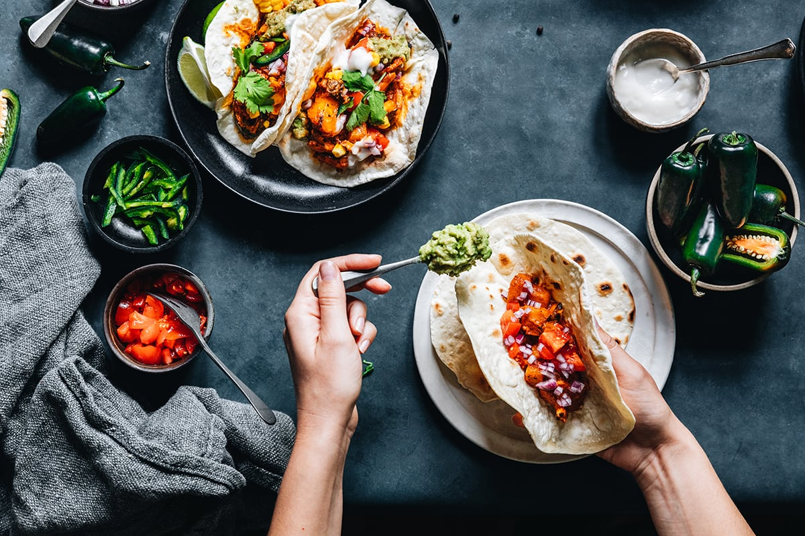

Norwegian-Style Tacos

A staple dish across Norway, a take on the classic Mexican taco.
Ingredients
- 400 g minced meat
- 1 bag of taco seasoning
- 1 can canned corn kernels
- 0.5 pcs. cucumber
- 2 pcs. tomato
- 0.5 pcs. onion
- 1 cup sour cream
- Salsa
- 200 g grated cheese
- Guacamole
- 1 pk taco shells
- 1 head of lettuce
Cooking instructions
- Fry the minced meat in two batches in a frying pan.
- Add the spice bag and water according to the instructions on the bag. Keep it warm.
- Put corn and grated cheese in a bowl and cut cucumber, tomato and onion into small pieces and put them in separate bowls.
- Place sour cream, salsa and guacamole in bowls. Place lettuce leaves on a plate.
- Heat the taco shells as directed on the package.
- Let everyone get what they like best. Dig in!